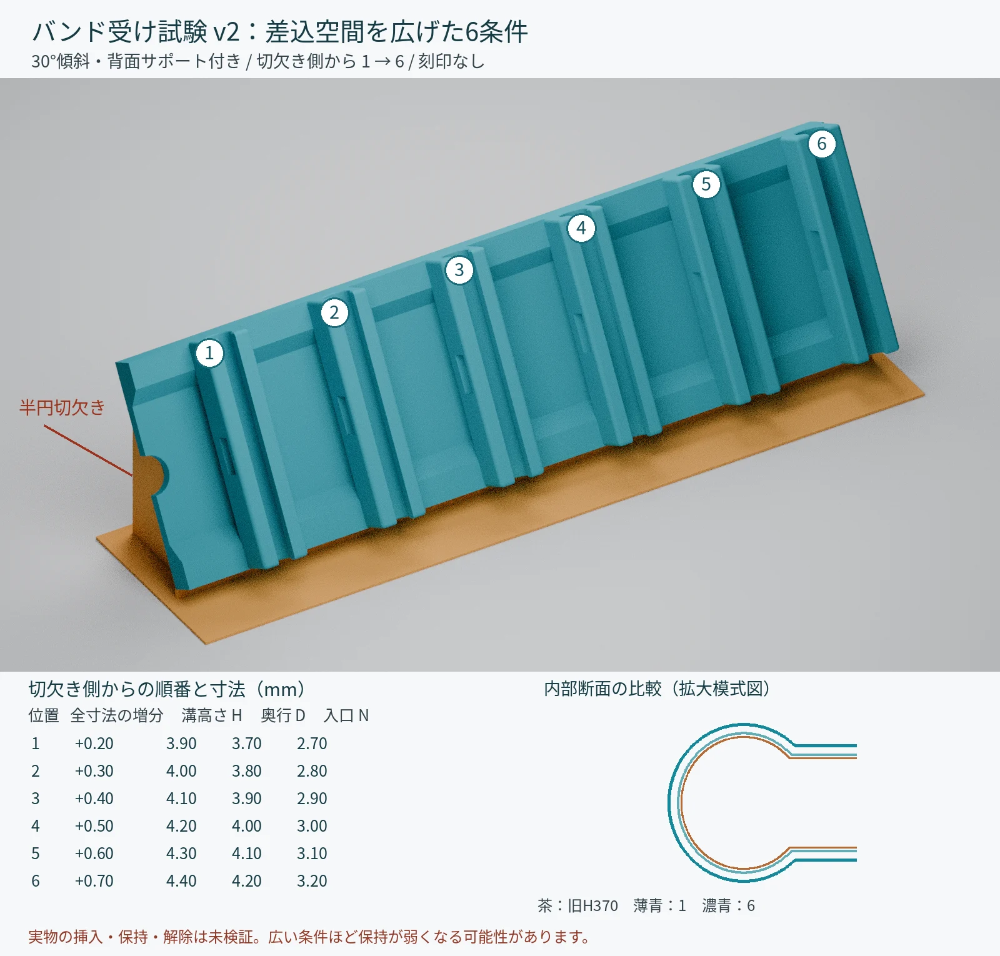

01 / V15 BODY
足なし版：編集・造形検討用

ホルダー単体は約55.700 × 55.628 × 12.610 mm。中央の腕接触基準から本体上端まで19.49 mmです。STLは組立座標のままで、造形向き・サポート・スライス設定は含みません。
STEPは形状編集や製造者への相談用です。実物の寸法確認と、材料・造形方法に合わせた印刷準備が必要です。
3D PRINTABLE WATCH CASE
試作モデル · 実物での適合確認が必要Apple Watchの小さい側のバンドを取り付けるための、M5Stopwatch用3Dプリントケースです。V15では本体を薄くし、背面2本のネジで固定する試作設計にしました。足なし版と、Adventurer 3向けの印刷姿勢・折り取り脚付き版を公開しています。
時計本体・バンドは別途必要です。
V15 / TWO SCREWS / PROTOTYPE
2026年10月29日公開
STL・STEP・ソース・検証資料を同梱
V14から平坦な高さ層を0.50 mm詰め、背面ネジ2本のための局所補強座を追加しました。磁石穴は設けていません。バンド受けの内形・ロック・位置・31°の角度と、外周へ抜ける音道を引き継いでいます。試験片のB6（A6 / C2K3、H4.20 / P6.00）に対応する設計ですが、フルサイズ本体での適合・保持力は未検証です。
ホルダー単体は約55.700 × 55.628 × 12.610 mm。中央の腕接触基準から本体上端まで19.49 mmです。STLは組立座標のままで、造形向き・サポート・スライス設定は含みません。
STEPは形状編集や製造者への相談用です。実物の寸法確認と、材料・造形方法に合わせた印刷準備が必要です。
足付きでも追加サポート必須。脚は印刷姿勢を保つための犠牲形状です。本体の最下部はベッドから2.0 mm浮いているため、脚だけに造形荷重を任せないでください。
外形は約32.575 × 55.628 × 51.700 mm。プリンタ専用印刷ジョブ、G-code、温度・積層設定は含みません。
ネジ中心間は40 mm。仮の軸穴はφ2.4 mm、頭逃げはφ4.4 × 深さ1.5 mmです。実物のネジ径・頭径・高さ・ねじ山・首下長と、本体側の受け構造を確認して調整してください。M2等の規格、購入する長さ、締付トルクは未確定です。穴径だけでネジ規格を決めないでください。
約0.8 mmの音道と約1 mmの受け屋根には造形・清掃・強度の確認が必要です。CAD・メッシュ検査は実機の保持力や印刷成功を保証するものではありません。
ZIP内の M5Stopwatch_V15_ADV3_tilt30_ONE_FOOT_ADD_SUPPORTS.stl をmm・100%で読み込み、保存された角度を維持します。差込軸と印刷Zの角度は30°、ケース面とベッドの角度は60°です。自動で平置きしたり、再回転したりしないでください。
ビルド面の中央に水平移動し、脚底がベッドに接していることを確認します。浮いたケース各部に追加サポートを設定し、バンド穴・ロック・音道・ネジ頭逃げに除去不能なサポートが入らないよう確認してください。
レイヤープレビューで脚の細い接続首が途切れないことを確認します。実スライス・実印刷、脚の強度・折り取り性は未確認です。冷却後は本体や受けをねじらず慎重に切り離し、機能面を削らないでください。
ARCHIVE
以下はCURVE05と差込空間拡大試験v2の公開記録です。V15の受け寸法・ネジ固定仕様とは異なります。旧試験の位置番号や寸法をV15へ置き換えず、それぞれのREADMEを確認してください。
BAND & CASE
公開アダプターのSMALL側受け断面を参考にした設計です。全世代・全サイズ・全メーカーのバンドとの互換性を保証するものではありません。
時計のケースサイズ表記だけで適合を判断せず、使いたいバンドのコネクターを試験片で確認してください。大きい側のバンドは対象にしていません。
バンドのコネクターを受けの溝に横から差し込み、バンド自身の中央ラッチで保持する構想です。解除は裏側の穴からラッチを直接押します。
独立した解除ボタンやばねはありません。押す位置・取り外し操作まで確認してから使い、無理に差し込まないでください。
GETTING STARTED
ZIP内の receiver_6_tilt30_WITH_support.stl をmm・100%で読み込み、保存された姿勢のまま印刷します。30°傾斜と背面支持をモデルに含みます。自動整列・平置きはしないでください。
刻印はありません。背骨の端の大きい半円切欠きが条件1側です。そこから順に1→6と数えます。切欠きが写る写真を残し、完全挿入・抜去・ラッチの係止・解除を別々に確認してください。
v2に対応するケースはまだありません。下の旧H340〜P565ケースへ番号を置き換えないでください。試験片で合っても本体での再確認と保持力の検証が必要です。
DOWNLOAD
STLの寸法単位はmm。
印刷姿勢版と標準版は同じ部品です。

H3.70 / P5.50の旧条件を共通基準に、内部溝・入口・中央開口の全寸法を+0.20〜+0.70mmの6段階で広げています。外形を丸ごと拡大したものではありません。

H340 / H350 / H360 / H370 / P535 / P565。旧H/P条件の参照用です。拡大版v2の条件1〜6には対応しません。現時点では本体の印刷を急がず、v2の試験結果を確認してください。
v2には30°傾斜と両端の0.15mm導入面取りを含みます。差込空間を広げるほど保持に効く縁が薄くなるため、入りやすさと保持力は別に確認が必要です。試験片は時計を保持するための部品ではありません。
この表は旧版の保存資料です。v2の位置番号とは対応しません。旧ブロックの数値刻印に対応するファイルを示します。HとPを別々の段から組み合わせないでください。Hは溝の全高、Pは中央ラッチ穴の左右幅です（mm）。
| ブロックの数値刻印 | ケースID | 印刷するファイル |
|---|---|---|
| H3.40 P5.50 | H340 | CURVE05_H340_print_axisZ.stl |
| H3.50 P5.50 | H350 | CURVE05_H350_print_axisZ.stl |
| H3.60 P5.50 | H360 | CURVE05_H360_print_axisZ.stl |
| H3.70 P5.50 | H370 | CURVE05_H370_print_axisZ.stl |
| H3.50 P5.35 | P535 | CURVE05_P535_print_axisZ.stl |
| H3.50 P5.65 | P565 | CURVE05_P565_print_axisZ.stl |
どの段にも合わない場合、近いIDを推測して使わず条件を見直してください。Hが大きいほど安全とは限りません。ケースの時計に隠れる面にもIDとH/P数値を刻印しています。

旧版をまとめて取得するZIPはGitHub Releasesで配布しています。各条件のSTL・STEPと生成ソースは6条件ケースZIPに同梱しています。
BEFORE YOU PRINT
6条件ケースは最終短縮版CURVE05を基準にしています。下記の単一条件ファイルは刻印変更前のH3.50 / P5.50参照版です。初めて印刷する場合も、まず拡大版v2の試験片で確認してください。旧版資料は寸法や受け位置が異なるため、各セットのREADMEを優先します。

元のM5Stopwatchケースを公開してくださったKawacciさん、バンド受け断面の参考アダプターを公開してくださったPk11さんに感謝します。
参考STLは単位情報がないためmmとして扱っています。Apple公式CAD曲線の取り込み・再配布は行っていません。本プロジェクトはAppleの公式製品ではありません。